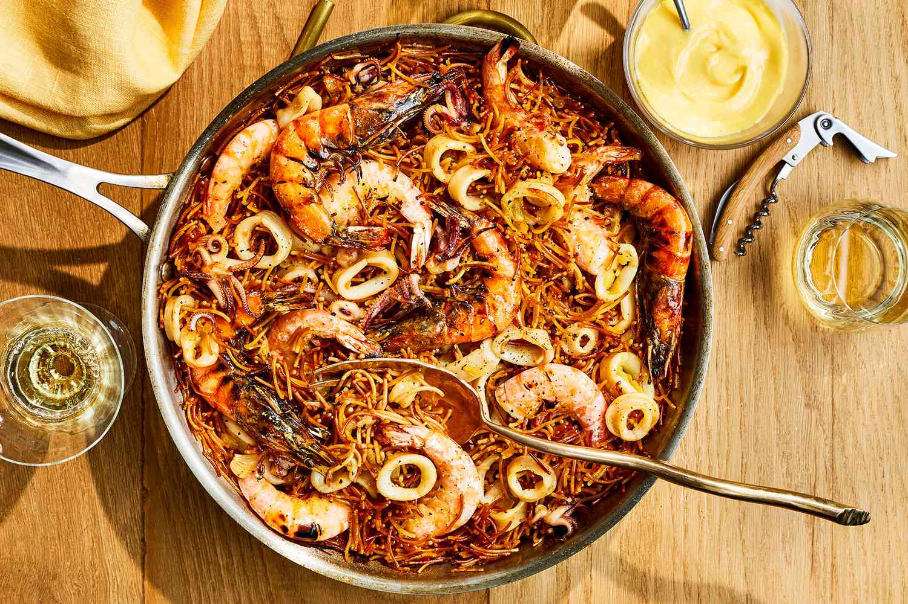

Fideuà is a colorful Valencian and Catalan dish often described as an interpretation of the popular paella. Similar to its more popular counterpart, fideuà employs a variety of seafood ingredients, but instead of rice, it combines them with thin and short pasta called fideo. Before serving, the dish is often topped with chopped parsley and lemon juice, while some prefer to pair it with an aromatic aioli sauce.
Meal prep time : 45 minutes
Servings : 6